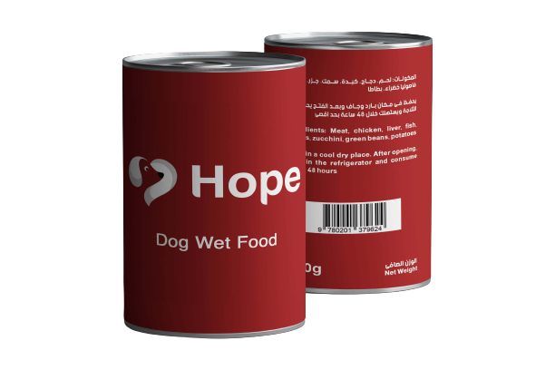
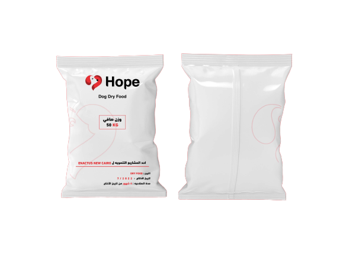

Donate Hope Wet Food
To make 1 ton of our first product which is fresh food we need 40% of protein which is taken from the chicken wastes and then we add 60% of vegetables wastes consists of sweet potatoes, carrots, beans, and of zucchini.
Donate Hope Dry Food
For dry food production we found a formula that includes 20% crude protein, 10% oils and fats, 2.8% fibers and the main ingredients are rice, whole corn, chicken meat meal, chicken fat, beetroot fiber, natural flavour, whole egg powder, vitamins and minerals.